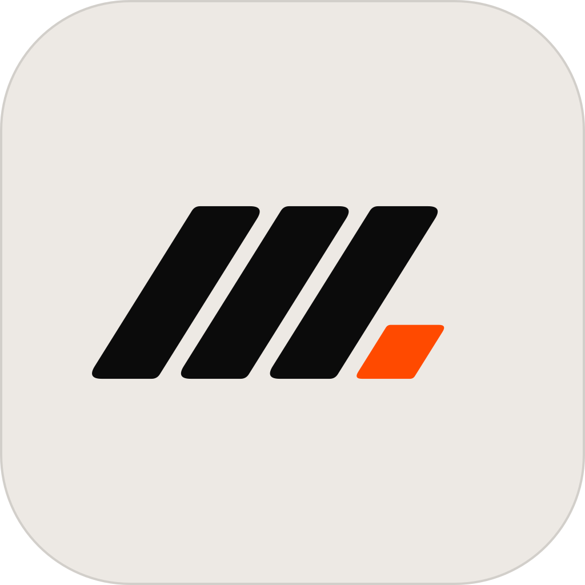
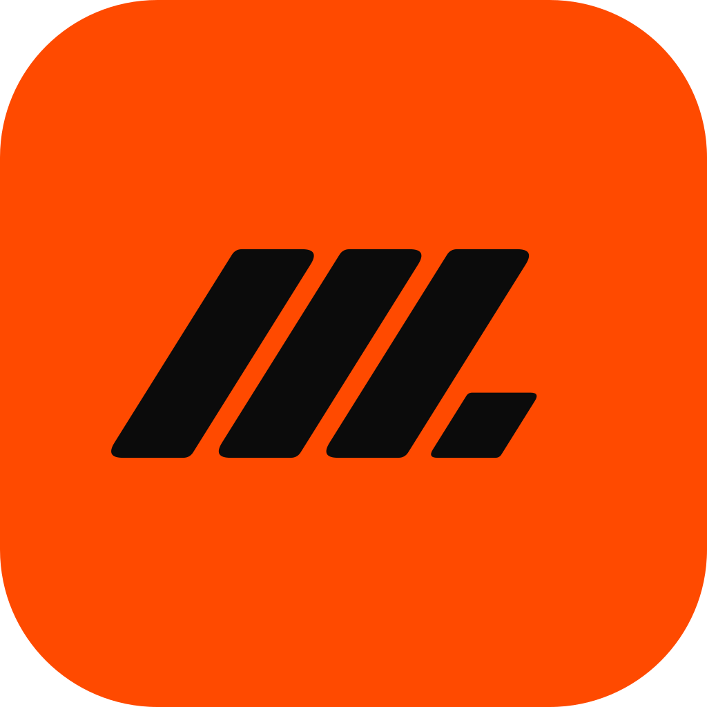
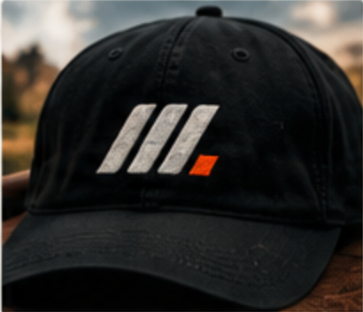
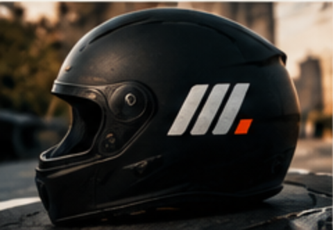
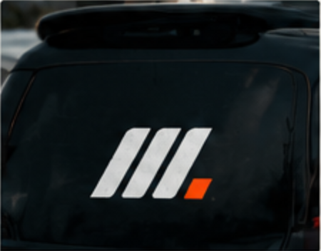
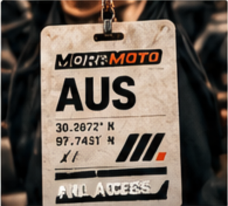
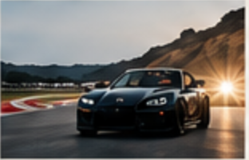
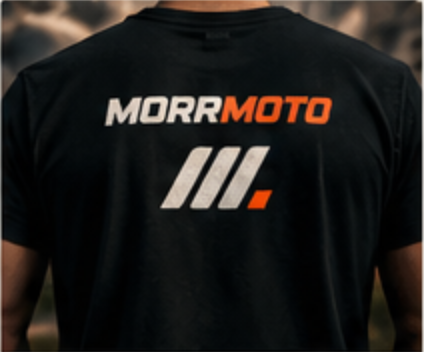
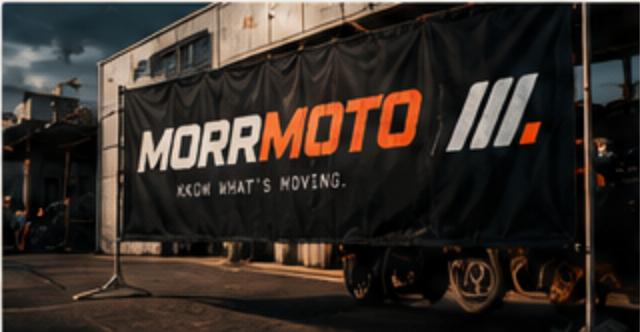

Motor culture × editorial × location intelligence
MorrMoto is the intelligence layer for local motor culture. The identity doesn’t say what you drive. It says something is moving.
///.

Light
IgnitionDark is the primary app icon. It keeps the signal point at full strength (Ignition on Ink is 5.9:1) and reads on both light and dark home screens. The Light icon loses its edge on white wallpapers. The Ignition icon goes one colour, so the signal disappears as a separate element. Keep Ignition for promotional use.
In context
Hat
Helmet
Vehicle
CredentialThe physical photos are crops from the approved board, used for direction. Final mockups use the vector master from brand/motion-mark/.
MORR / MOTO
Forward-leaning, heavy and wide, a little motorsport-influenced, but not a team or manufacturer badge. MOTO in Ignition separates the meaning without breaking the word. The stand-in is Archivo Italic 900 at 125% width (open licence). Before launch, outline a master vector with custom M and R joins (see the brand/wordmark/ SVGs).
One wordmark, many layouts
EXPERIMENT 003
City codes are airport-style editorial shorthand, not official designations. They sit at data size, after a thin slash, and never outweigh the wordmark. Austin is the first market and not part of the permanent logo. Coordinates are editorial data, never part of the logo.
Component logic, not taste
lockupFor(slotWidthPx) = ≥ 560 → "xl" MORRMOTO + KNOW WHAT’S MOVING. + ///. ≥ 240 → "l" MORRMOTO ///. ≥ 120 → "m" MORRMOTO else → "s" ///. (optical glyph ≤ 24px tall) // Measure the slot the logo is placed in, not the viewport.
Measured in X
Small, still a signal
Ignition means something
Ignition means active, moving, selected, discovered, important, live. It never means “this area needed colour.” Keep it scarce: about one Ignition moment per screen region.
Ignition is never body text on Paper (2.8:1). Use it as a fill with Ink type, or as text on Ink. Asphalt is for data on light surfaces only. On dark, secondary text uses Text-2 #A8A39B. The default product theme is dark: Ink ground, surfaces 1 and 2 for cards, Paper text.
Three layers
is moving.
Upright, quiet, consistent
Phosphor Regular (MIT): 24 px grid, 1.5 px optical stroke, round joins. Use at 16, 20 or 24 px. Functional icons are never slanted, distressed or filled with Ignition. Only an active state turns an icon Ignition.
People + machines + places

These are crops from the approved board, used for direction only. They are not event photography and never ship in the product. Order of preference: source photo, then organiser photo, then MorrMoto editorial photo, then the graphic no-image placeholder. MorrMoto never makes up an event photo.
Dark, calm, one signal
Base map: OpenStreetMap, inverted and desaturated to Ink, with quiet labels and low-contrast roads. Swap in a hosted dark style (Mapbox, Stadia) for production traffic. Pins are neutral, with no category colours. Only selected, featured and route elements are Ignition. The Motion Mark appears only in attribution and the loading state, never as a pin.
What · when · where · distance · category · price · trust
Cards are built from type, spacing and the date block before containers. Corners are 6 px, with no shadows inside lists. The no-image placeholder uses the category icon, date, city code, the 25° Ignition slash and the reverse mark at 14 px. It is designed to look intentional, never like a missing photo. Rendered from Phase 1 records. Distances are approximate, from downtown.
The signature block
Always data type
Whole miles from 10 up, one decimal below 10. Distance is measured from the area the user picks, rounded to about a mile, and never shows an exact location.
Symbols before containers
Compact controls
/ → // → /// → ///.
Strokes enter at 90 ms intervals and the signal lands last at 300 ms. Easing is cubic-bezier(.2,0,0,1): quick and mechanical, never bouncy. Loading loops only while a real request is pending. It never stretches the wait just to show the animation. With prefers-reduced-motion, the full mark shows at once. Component: brand/motion-mark/motion-mark.js.
Signature, not watermark
weekend
CIRCUIT OF THE AMERICAS
Would you wear it without the name?
97.7431° W

T-shirt · board
Banner · boardOne token set, two themes
Components only use semantic tokens such as --surface-primary, --text-primary, --signal and --signal-text. Dark mode uses Ignition (#FF4A00). Light mode uses one deeper orange, Ignition Day (#B23600), for every fill, mark and highlight: bright Ignition reads at only 2.8:1 on Paper, while Ignition Day passes AA for text on every light surface (5.0:1 on Paper, 4.6:1 on cards), with Paper text on Ignition Day fills at 5.0:1. The theme follows the device by default, with Light/Dark override from the header button. The choice is saved, and a pre-paint script prevents a flash of the wrong theme.
People + machines + places
How the library works: one file per image, with categories, places and times as tags. Every record carries provenance (source, photographer, licence, last checked) and a focal point for cropping. Images are served through Vercel Image Optimization at 320–1920 px in AVIF/WebP, lazy-loaded inside fixed-ratio frames. Real event cards only ever show the event's own image or a MorrMoto graphic fallback, never library or generated art. Schema: db/migrations/003_images.sql. Manifest: assets/morrmoto/images/manifest.json.